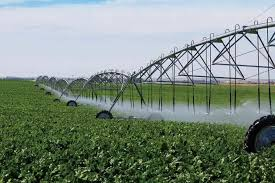
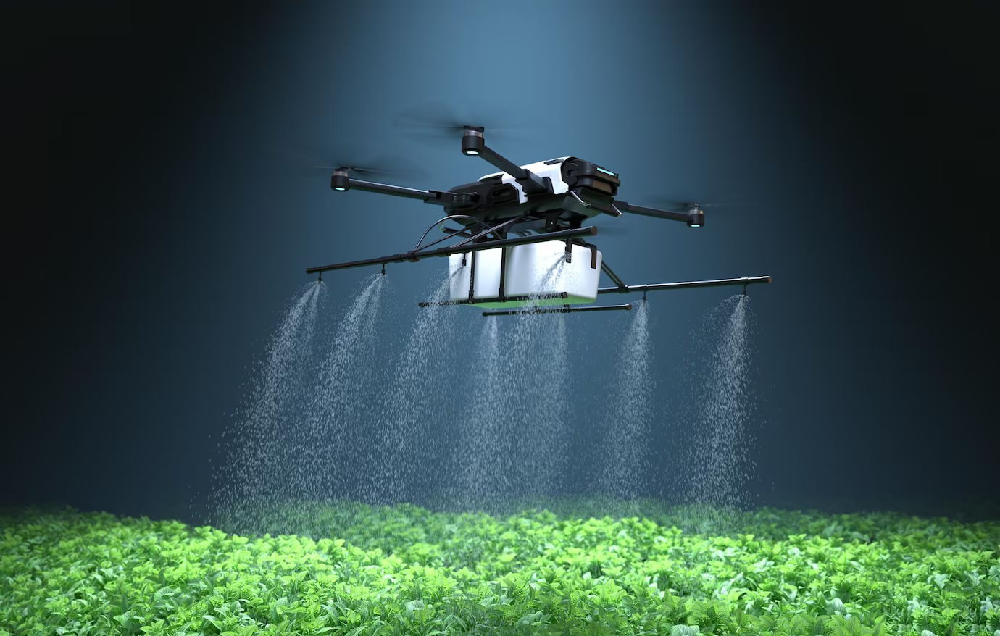
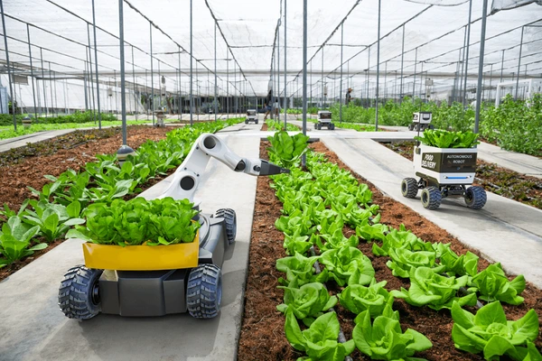
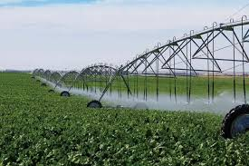
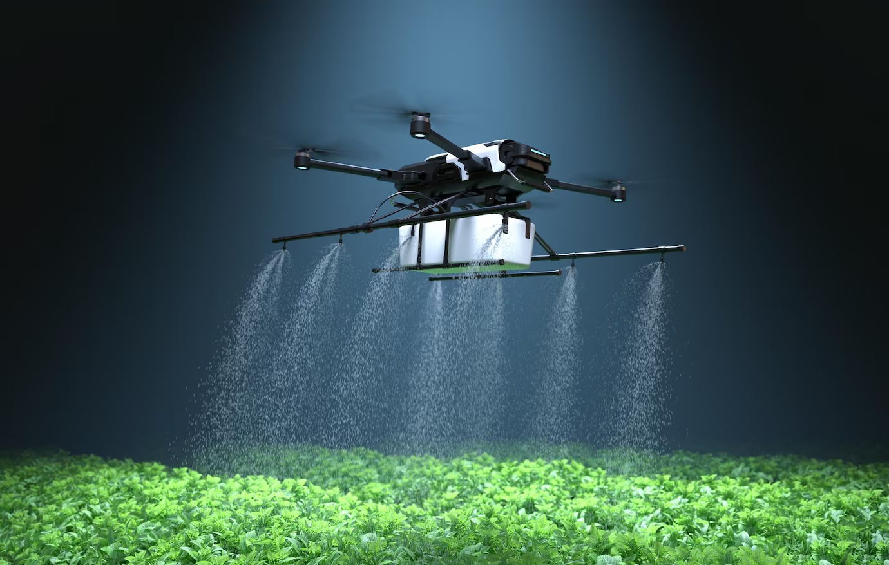
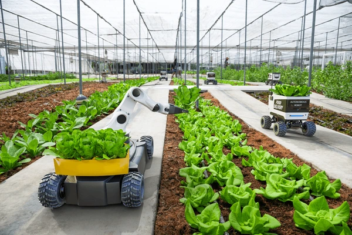
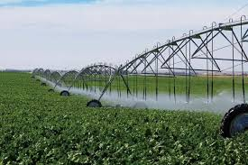
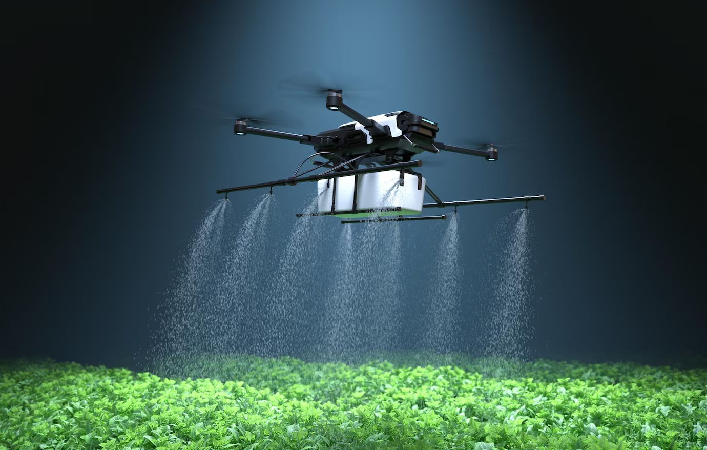
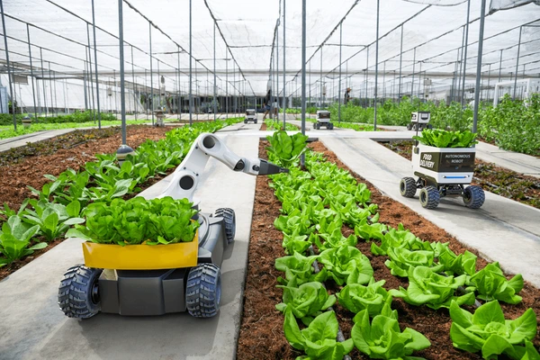

Gallery
 





Reduce environmental impact and increase efficiency in agriculture.
Our smart agriculture system leverages IoT devices to monitor and optimize the use of water, fertilizer, and other resources. By utilizing real-time data, we can help farmers make informed decisions that benefit both their crops and the environment.



"The smart agriculture system has transformed the way I manage my farm. I can now monitor everything in real time!"
"With automated irrigation, I've reduced water usage significantly while improving crop yield!"
Smart agriculture involves using technology to enhance farming practices, increasing efficiency and sustainability.
IoT devices collect data that helps farmers monitor conditions and make informed decisions about resource use.
Yes, by optimizing water and fertilizer usage, farmers can significantly lower their operational costs.